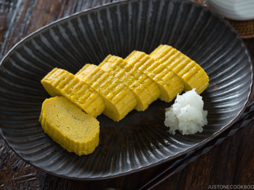

The Art of Tamagoyaki: Crafting Japanese Rolled Omelette at Home

Introduction:
Tamagoyaki, a Japanese rolled omelette, is a culinary masterpiece
known for its delicate layers, sweet-savory flavor, and visually
appealing presentation. While it may seem like a dish reserved for
skilled chefs, making tamagoyaki at home is a rewarding endeavor that
combines simplicity with elegance. Join us as we explore the art of
crafting homemade tamagoyaki – a culinary journey that will elevate
your breakfast or bento box to new heights.
Ingredients for Homemade Tamagoyaki:
Eggs:
-
The star ingredient, providing the base for the omelette's
silky texture.
Dashi (Japanese Soup Stock):
-
Adds umami to the tamagoyaki. Alternatively, you can use a
mixture of water and soy sauce.
Sugar:
-
Balances the sweetness with the savory elements of the dish.
Equipment:
Tamagoyaki Pan (Rectangular Pan):
-
Essential for achieving the distinct shape and layers of
tamagoyaki.
Spatula:
- Helps in flipping and rolling the omelette layers.
Heat the Tamagoyaki Pan:
-
Brush the pan with vegetable oil and heat it over medium-low
heat. Ensure the pan is evenly coated.
3. Pour and Cook the First Layer:
-
Pour a thin layer of the egg mixture into the pan, allowing it
to set slightly but still be slightly runny on top.